- Gravidade
- Flutuabilidade- tanto debaixo d'água quanto na atmosfera
- Pressão estática - pressão hidroestática e pressão atmosférica
- Resistência ao movimento - tanto embaixo d'água quanto na atmosfera
- Termodinâmicas - como derretimento e combustão
- Impactos no fundo do oceano
- Ondas do mar e ventania
Primeiro, você pode usar a ferramenta Marreta 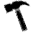 para perfurar um objeto. Quanto mais tempo você pressiona o botão do seu mouse, Mais enorme fica o buraco! Também existe a Serra Elétrica 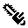 que você pode usar para cortar seu objeto; Segure a tecla 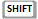 para travar a direção do corte.
Use a Força Explosiva para gerar um campo de força explosivo no objeto. Pressionando a tecla reduz a duração da explosão, produzindo um efeito mais concentrado.
Usar a ferramenta do Arco Elétrico 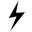 envia choques elétricos por todo o objeto, causando os típicos danos como calor, queimaduras e danos a componentes eletrônicos (se disponiveis). Segure a tecla para aumentar o alcançe dos arcos elétricos.
A ferramenta de Atrair 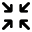 e a de Giro 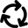 aplicam forças radiais e tangenciais, respectivamente. Além disso, com essas ferramentas, quanto mais tempo você mantiver o botão do mouse pressionado, mais fortes as forças ficam. É possível inverter a direção das forças com a tecla .
A ferramenta de Inserir Ponto de Congelamento 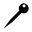 permite que você ''congele'' uma parte do objeto: quando uma parte do objeto está congelada, sua velocidade se torna zero e sua posição nunca muda. É melhor aumentar a força geral do objeto acessando a janela de Configurações do Simulador quando você usar essa ferramenta, ou então o ponto congelado vai rapidamente se quebrar sob o enorme estresse causado pelos pontos vizinhos. Um ponto individual pode ser removido aplicando a ferramenta no mesmo ponto novamente, e todos os pontos podem ser removidos pressionando a tecla enquanto usa a ferramenta. Com a ferramenta de Mover você pode mover (ou rotacionar, caso pressione a tecla partes de um objeto, enquanto a ferramenta Mover Tudo permite que você mova (ou rotacione) um objeto inteiro.
Com a ferramenta de Pegar e Puxar 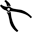 você pode pegar uma partícula de um objeto e move-la por aí - MAS TENHA CUIDADO!, Se você puxar rápido demais, vai quebrar!
A ferramenta de Injetar/Retirar Pressão 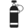´permite que você adicione pressão num objeto, tanto como remover a pressão do mesmo pressionando a tecla . Semelhantemente, a ferramenta de Inundar/Extrair Água permite que você injete água num objeto, ou então extrair a água dele pressionando a tecla .
O Disparador de Calor
 pode ser usado para adicionar calor em partes parts do objeto, deixando ele perigosamente próximo de seu ponto de combustão; Pressionando a tecla permite que a ferramenta realize a extinção do calor no objeto.
pode ser usado para adicionar calor em partes parts do objeto, deixando ele perigosamente próximo de seu ponto de combustão; Pressionando a tecla permite que a ferramenta realize a extinção do calor no objeto.Depois que o objeto afundar até o leito do oceano ou ficar queimando por um período de tempo, sua estrutura ficará enferrujada e/ou carbonizada; você pode usar a ferramenta de Esfregar
 para limpar toda a sujeira. Alternativamente, pressionando a tecla irá transformar a ferramenta num agente decompositor.
para limpar toda a sujeira. Alternativamente, pressionando a tecla irá transformar a ferramenta num agente decompositor.O Invocador de Ondas 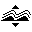 pode ser usado para gerar ondas no mar manualmente, enquanto Ajustar o Terreno
 permite que você customize o chão no fundo do oceano, criando abismos e ilhas a seu gosto. Pressione a tecla para bloquear a alteração do terreno horizontalmente.
permite que você customize o chão no fundo do oceano, criando abismos e ilhas a seu gosto. Pressione a tecla para bloquear a alteração do terreno horizontalmente.A ferramenta de Assustar Peixes pode ser usada para... assustar e afugentar os peixes. Pressionando a tecla transforma a ferramenta em uma distribuidora de comida de peixe deliciosa, fazendo com que os peixes se aglomerarem ao redor do cursor do mouse. Finalmente, para os tipos passivo-agressivos, a destruição pesada pode ser facilmente alcançada com as bombas.
As Bombas-Relógio 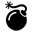 explodem automáticamente apena alguns segundos depois de inseridas, enquanto as Bombas RC e as Bombas Anti-Matéria 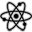 necessítam que você as detone pressionando a teclas e respectivamente. As Bombas de Impacto 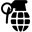 apenas explodem ao... impacto. Se você sentir remorso pela destruição que você causou em seu momento de diversão, você pode tentar a ferramenta de Reparar Extruturas
 nas partes danificadas do objeto (E se você for habilidoso o suficiente, será capaz de restaurar a estrutura do objeto à sua condição original!).
Personagens NPC's e objetos da tripulação - como humanos ou móveis - podem ser adicionados no menu dos NPCs.
nas partes danificadas do objeto (E se você for habilidoso o suficiente, será capaz de restaurar a estrutura do objeto à sua condição original!).
Personagens NPC's e objetos da tripulação - como humanos ou móveis - podem ser adicionados no menu dos NPCs.
O dia e a noite podem ser ajustados com as teclas
 e
e